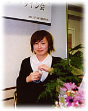

|
山崎まどかさん（左）と杉浦さやかさん
CHAPTER1 男気あっての乙女なり
山崎 私は杉浦さんのファンなんです。杉浦さんの『ベトナムで見つけた──かわいい・おいしい・安い！』（祥伝社黄金文庫）を持ってベトナムに行ったくらい。トークショーで一緒にお話したい人いますか？って言われたときに杉浦さんの名前が浮かびました。
杉浦 お会いするのは初めてですね。でも私たちは、吉祥寺周辺の人間という共通点があります。山崎さんは小中高と吉祥寺にいらして、私はもう5年くらい吉祥寺に住んでいます。
山崎 私が最初に読んだのは、『お散歩ブック』（KKベストセラーズ）でした。この本で、吉祥寺周辺の人だなって思ったんです。ところで、杉浦さんはずっとイラストを描いているんですか？
杉浦 大学4年生から仕事しています。最初は挿絵の仕事をしていて、趣味で手書きの新聞をつくっていました。それを見た編集者の方に、本をつくってみないかっていわれて。そこから生まれたのが『絵てがみブック』です。それから本をコンスタントに出しています。『絵てがみブック』と『お散歩ブック』、それに『わたしの日曜日』がシリーズになりました（KKベストセラーズ）。
山崎さんはライターをずっとなさってきたんですか？
山崎 そうですね。でも「乙女」関係の仕事をやりはじめたのはつい最近です。それまではずっとビジネス誌や経済誌をやっていたんですが、趣味で好きなことも書きたいなって思っていたら、私のウェブサイトRomantic au go! go! を見た晶文社の方が声をかけて下さって、単行本『オードリーとフランソワーズ 乙女カルチャー入門』になりました。
さらに、ウェブサイトの容量がいっぱいになってしまったので、少し整理してミニコミ誌にしたものを青山ブックセンターに置いてもらったことがありました。それをたまたま『オリーブ』の編集長が見つけてくれて、それで「東京プリンセス」の連載が決まったんです。
――『オードリーとフランソワーズ』を読むと、乙女カルチャーというのはおばあちゃんになっても楽しめる趣味だと思うのですが、お二人はどのようなおばあちゃんになりたいですか？
杉浦 男女年齢問わず可愛い人に憧れています。『八月の鯨』っていう映画でリリアン・ギッシュが演じている、お庭の薔薇に話しかけるセーラーばあちゃん。ああいう人になれたらなあって思います。
山崎 私はとりあえず健康でいたい（笑）。歩きまわれるおばあちゃんでいたいですね。憧れるのは、タシャ・チューダーっていう絵本作家です。彼女は森の奥で19世紀のままの生活をしようとしました。裸足でアンティークの服を着て糸を紡いだりする、すべて自給自足の生活です。ところが、最初はそういう生活のためにした結婚が、いざ水道や電気もひかない生活をしたら、案の定あっという間に離婚になってしまったらしいんです。自分を貫くと大変なことになるんですね。それでも憧れます。
杉浦 『オードリーとフランソワーズ』を読んでわかったのは、乙女こそ男気の人だということです。自分の確固たる世界観をもっている人は一本気で男前でないと。
山崎 このあいだ嶽本野ばらさんが、乙女の定義は、「男がいうハードボイルドの女版みたいなものだ」っておっしゃっていました。なるほど、ハードボイルドって言い方をすればかっこいいですよね。
杉浦 私が男気を感じるのは、田村セツコさんというイラストレーターです。何十年も可愛いらしい明るさをもっていて、今でもパフスリーブが日本一似合う方。自然でありながらも強い信念を持っているってかっこいいなって思います。
CHAPTER2 お気に入りの空間をもつべし
――お二人の一番好きな美術館を教えて頂けますか？
山崎 美術館は小さいところが好きです。弥生美術館とか、岩崎ちひろ美術館とか。スリッパを履いて見学するところがいいですね。
杉浦 弥生美術館は竹下夢二の美術館が隣接していてお得ですよね。弥生美術館の高橋真琴展に行った記憶があります。あそこはミュージアム・ウォッチとかも可愛いんですよ。夢二復刻千代紙の便箋も、ブックカバーもすごく可愛い。
山崎 昭和初期から私たちが読んでいた頃の『りぼん』の漫画家が描いた下敷きもあるんですよね。
ところで、杉浦さんは『りぼん』や『なかよし』買ってました？ 私たちほぼ同い年ですよね。『おはよう！スパンク』（たかなししずえ・雪室俊一）がはやった頃でしょうか。
杉浦 そうですね。『こっちむいて ラブ』（あさぎり夕）っていうアイドル漫画があったんです。主役の娘の衣装デザインを募集していたので、それに応募して賞をもらいました。
山崎 杉浦さんはその時すでにオールド・スクールだったんですね。そういえば、私たちの時代って、『mcシスター』派と『オリーブ』派って、わかれていたと思いません？ 杉浦さんは『シスター』派？ 私は中学高校のときは『mcシスター』派でした。
杉浦 『オリーブ』って本当に可愛いんですが、普段着られる服があまりないですよね。昔はヒラヒラフワフワの服が多かったし。
山崎 そうそう。ところで、『オリーブ』派の少女マンガ家といえば、誰にあたるんだろう？
杉浦 『別マ』（別冊マーガレット）でお描きになっていたくらもちふさこさんはよく『オリーブ』に出ていらっしゃいますよね。
山崎 私が読んでいた頃の『別マ』っていうのは、「ホットロード」（紡木たく）が全盛のヤンキー時代（笑）。スカートの長い都立高生の「ラブもの」には、自分が私服だったせいもあって、とても憧れた記憶があります。
――好きなカフェはありますか？
山崎 無くなったペンギンカフェは私のファースト・カフェでした。それと、中学時代の頃に憧れていたのは、表参道のカフェ・ド・コテ。外国人がたくさん座っていて、大人にならないと入っちゃいけないような雰囲気でした。店にはかっこいい人しかいなかったんですよ。中高生ってまだ自分の未来に希望をもっているから、大人になったらアンナ・カリーナみたいになるはずだって思いますよね（笑）。その頃になったら行こうって思っていたんですが、そこも無くなってしまった。
高校１年の途中までいた国立にも好きな場所があります。老舗の邪宗門とロージナ茶房には、乙女な母によく連れていってもらいました。
私、コーヒーあまり飲めないんですけど、京都にある六曜社珈琲店のコーヒーは飲めるんです。京都にはよく行かれますか？
杉浦 大人になってから三度しか行ったことがなくて。いつもソワレに行って終わりって感じです。
山崎 私もソワレと、イノダコーヒが好きです。嶽本野ばらさんイチオシの若王子という店もいいですよ。哲学の道にあって、席の半分くらいガラクタで「イル」な気持ちを誘うんです。店内には絶妙にコケシが配置されていて。そういえば、杉浦さん、コケシがお好きなんですよね。
杉浦 一時期は100本くらい部屋に飾っていて、やばかったです（笑）。今はマトリョーシカを集めています。
山崎 そういえば、乙女のトレンドは今ロシアものなんですよ！ 社会主義国ってねらい目なんですかね。ベトナムや中国ものも面白そう。杉浦さんはお土産好きですよね？
杉浦 はい。偽マトリョーシカとか、うそディズニーものとか、しょぼいものが好きです。
山崎 偽物好きならメキシコに行かれたらいいと思いますよ。私は小学校の始めから９歳までメキシコにいました。メキシコには、お菓子や人形を詰めるピニャータっていう素焼きのいれものがあるんです。それを張子で飾って、高いところから吊るすんですよ。スイカ割りみたいなもので、子供たちが目隠しをして割るんですね。そうするとお菓子やおもちゃがパッと降ってくる。その中身がハローキティとか、ポケモンの偽キャラの嵐なんです（笑）。
――杉浦さやかさんへの質問です。すごくステキな物や事を見つけるのがお上手なんですが、そのコツはありますか？
杉浦 自分でも分からないんですが、つねにキョロキョロしながら歩いています。それがコツでしょうか。早起きして骨董市に行ったりしています。
山崎 私も杉浦さんの小物関係の本大好きです！

CHAPTER3 夜を徹してみるなら、こんな映画
――ここで、お二人に映画の質問をしたいと思います。お互いのお誕生日プレゼントに、オールナイト上映の券を贈ったとします。それはどんなプログラムでしょうか？
杉浦 見た後に幸せになる恋愛映画を4本選びました。まず中国の映画で『太陽の少年』。
山崎 『恋する惑星』と同じく、ストーカー映画として有名な……。
杉浦 （笑）主人公の少年が恋する女性がかなり魅力的なんですよ。ぽっちゃりしていてムチムチ系ですが、すごい美人です。まず一本目には初恋のトキメキを感じるアイテムを。二本目は『眺めのいい部屋』。山崎さん、お好きですよね？
山崎 はい、好きです。ああいう出来事がフィレンツェにさえ行けば起こるんじゃないかという錯覚を思わせます（注 『眺めのいい部屋』は旅先でであった男女の情熱的なロマンス）。
杉浦 最後は、エリック・ロメールの『恋の秋』。主人公のおばさん（マリー・リヴィエール）がすごくかっこいい。髪の毛を爆発させて、こぐれひでこさんに似ています。この人はいつもロメールの映画に出てきますよね。
山崎 彼女は『クレールの膝』にも出ているし、『緑の光線』では、友達がシクシク泣いているときに「あんたはそれだから彼氏ができないのよ」って言ったりする、すごくいやな女の役ででてきます。ロメール映画なら、私は『恋の秋』が一番好きですね。
杉浦 最後は私のすごく好きな映画です。王道ですけど、『或る夜の出来事』。クラーク・ゲーブルがいいんです。
山崎 なるほど！
私は、アメリカの学園ものがすごく好きなので、それをおすすめします。悲しいことにビデオ・スルーと言って、劇場にかからずいきなりビデオになっちゃうものが多い。それでも、すごく見て頂きたいのが、『待ちきれなくて…』。ジェニファー・ラブ・ヒューイットが出演者のなかで一番有名です。高校の卒業式の後に友達の家でドンチャン騒ぎをするっていうだけの、98年の映画です。
それと、全然乙女じゃなくって申し訳ないんですけど、『天才マックスの世界』。これは、私立高校で文科系のクラブをいくつも掛け持ちしている少年が、女の先生を好きになって、そのうち学校の理事と取り合いになるという話。これも98年です。劇場公開は残念ながらされませんでした。
『ガールズ・ルール 100％おんなのこ主義』っていう、60年代の全寮制女子校ものもいいんですよ。5人組のはみだした女の子の話で、『ヴァージン・スーサイズ』のキルステン・ダンストが出ています。
４本目は公開されたので、ご覧になったかもしれません。『シーズ・オール・ザット』という青春もの。プロム前に一番イケてる彼女に振られた学園プリンスが、開き直って、「どんな娘でも、僕が選べば誰でもプロム・クイーンになるんだ」って豪語する。そしたら、友達が「じゃあ、あのメガネっ娘はどうだい」と、ちょうど校庭でずっこけてた冴えない女の子をターゲットに指名する話。彼女が、メガネをとると、あら本当は美人、みたいな。
杉浦 王道ですね。
CHAPTER4 人気連載はこんなふうにして生まれた
――さて、会場からの質問にお答え頂きたいと思います。まずは、山崎まどかさんに。『オリーブ』の「東京プリンセス」に出てくる人物にはモデルがいるのですか？また、原稿を書くときに苦労したことや裏話があれば教えて下さい。
山崎 この連載については、はじめに『オリーブ』の編集部から、少女版の「なんクリ」（『なんとなく、クリスタル』）を書いてほしいというオファーがあったんです。「東京プリンセス」では、説明する基本的なアイテムはレアものではなく、定番にしようと思いました。今さら誰もこんな説明をしてくれないっていうものを、あえて選んでいます。
主人公の二人のモデルは、いるとも言えるし、いないとも言えます。たぶん私が今まで会ってきた友達の要素が、ちょっとずつ入っているんだと思います。女の子には、彼氏ではなく、女の子どうしでつるんでいるのが一番楽しい時期がある。そういう時の女の子を書こうって思いました。
うんと仲のいい女友達がいたのは私が中高生の頃でした。あんまり仲がよくて、時々死に物狂いのケンカをしてしまう。すごく趣味が似ちゃうので個性が分からなくなったりして。その頃のことが「東京プリンセス」に反映されていると思います。あと、よく、仏文科の主人公二人が通っている大学はどこなんですかって質問をされます。ヒントは、二人とも大田区在住ってこと。私が通っていた大学なんですけど、あの大学は仏文がないので基本的にまぼろしの大学ということになっています。
杉浦 黒と白と紺のストイックな娘はいますか？
山崎 私の高校時代の友達がモデルです。料理が上手で、すごく頭がよくって、きちんと生活していて、この人には到底かなわないっていう人だったんです。私がなりたいけど絶対なれない理想像ですね。その彼女と、そこにいろんな女の子を寄せ集めた結果が、あのキャラクターになりました。
――次の質問。山崎さんはお忙しいのにすごく本を読んでいらっしゃいます。読書の時間はどうやってつくっているのでしょうか？
山崎 そんなに読んでいないんですよ。だって本が本当に好きな人って一日一冊読んだりするじゃないですか。私は時間かかってしまうんです。3、4冊くらいかけもちで読んで、途中で投げてしまうこともあるんですよ。
杉浦 でもお仕事したり、試写会に行ったりして、よく読む時間ありますね。
山崎 寝る前にベッドで読みます。だから重くない文庫本になりますね。本を読むのは仕事に上手くいっていないときです。行き詰まったときの逃避なのかも。
――本日はどうもありがとうございました。
|